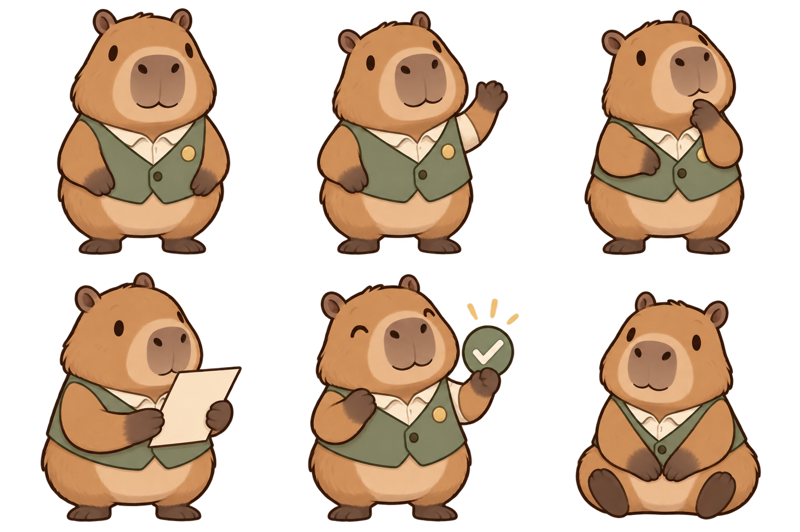

Заявка № КБ-1024Одобрено
На следующий
шаг вашего бизнеса
1 250 000 ₽
- Срок
- 24 месяца
- Платёж в месяц
- 66 088,87 ₽
Демонстрационные данные. Пример визуального оформления, не предложение кредита.
Карамель. Шалфей. Спокойствие.
Цвета Капибанкира становятся основой кабинета: тёплая бумага, кофейный текст и зелёный, который помогает действовать.
Посмотреть проверку APCA
#FAF7F0canvas#EEE7DBoat#D5A06Acaramel#EAC9A2caramelSoft#DFE6D8sage#354B3Aforest#302820inkКарамель — иллюстрации и декоративные детали. Для текста на цветном фоне используем только пары, проверенные ниже.
1 250 000 ₽
Демонстрационные данные. Пример визуального оформления, не предложение кредита.
Каждая строка задаёт цвет текста, фон, размер и вес. Знак Lc сохраняет полярность: минус означает светлый текст на тёмном фоне.
| Применение | Пример текста | Текст / фон | Размер / вес | Lc / цель |
|---|---|---|---|---|
| Основной текст | Капибанк · 1 250 000 ₽ | #302820 | 16px / 400 | +96.57 |Lc| ≥ 90 |
| Текст на белом | Капибанк · 1 250 000 ₽ | #302820 | 16px / 400 | +101.26 |Lc| ≥ 90 |
| Подписи | Капибанк · 1 250 000 ₽ | #574C41 | 16px / 500 | +84.12 |Lc| ≥ 75 |
| Вторичный текст | Капибанк · 1 250 000 ₽ | #62564A | 18px / 400 | +80.02 |Lc| ≥ 75 |
| Основная кнопка | Капибанк · 1 250 000 ₽ | #FAF7F0 | 16px / 700 | -90.95 |Lc| ≥ 75 |
| Успешный статус | Капибанк · 1 250 000 ₽ | #354B3A | 16px / 600 | +75.69 |Lc| ≥ 75 |
| Карамельный акцент | Капибанк · 1 250 000 ₽ | #302820 | 18px / 700 | +73.01 |Lc| ≥ 60 |
| Предупреждение | Капибанк · 1 250 000 ₽ | #684410 | 18px / 600 | +68.43 |Lc| ≥ 60 |
| Ошибка | Капибанк · 1 250 000 ₽ | #81382F | 16px / 600 | +76.35 |Lc| ≥ 75 |
Расчёт: apca-w3 0.1.9, алгоритм 0.0.98G-4g. Все девять пар проходят выбранные проектные пороги и таблицу fontLookupAPCA. Пороги — правила этого проекта, а не универсальные уровни сертификации.
APCA — развивающиеся рекомендации по контрасту, не заявление о соответствии WCAG 2.2. Для конкретного шрифта результат дополнительно проверяется визуально; начертания, размеры и подложки нельзя менять независимо.